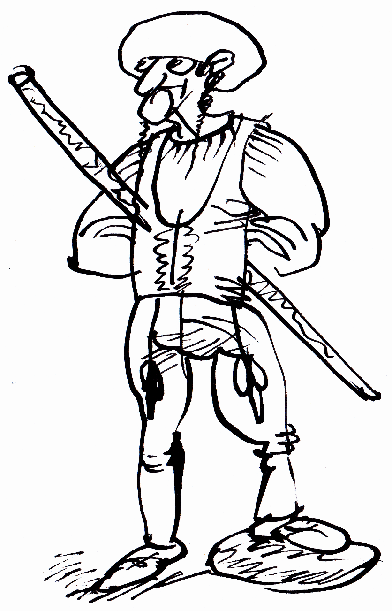
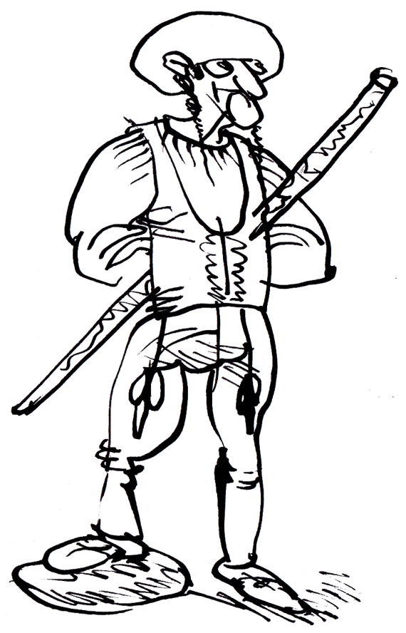

Bača Jano
Úvod
Chcem knižku
Náš Tím
Ako kniha vznikla
Fotogaléria
Historické okienko
Bača Jano a Slovenčina
Recenzie a názory čitatľov
Kontakt
BAČA JANO
Vitajte na stránke venovanej tejto slávnej osobnosti a jeho životopisnej publikácii
Národ slovenskí: Baču Jana príhoďi a skúsenosťi“

Úvod
Chcem knižku
Náš Tím
Ako kniha vznikla
Fotogaléria
Historické okienko
Bača Jano a Slovenčina
Recenzie a názory čitatľov
Kontakt